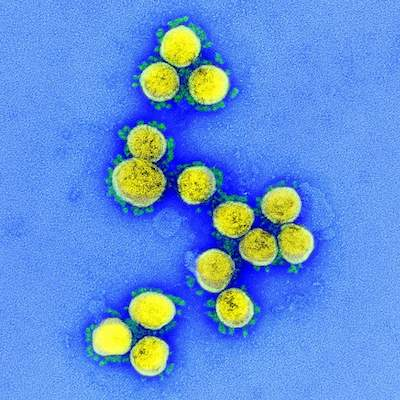

On March 13, 2020, the National Science and Technology Advisors from a dozen countries, including the United States, called on publishers to voluntarily make their COVID-19 and coronavirus-related publications, and the available data supporting them, immediately accessible in PubMed Central (PMC) and other appropriate public repositories to support the ongoing public health emergency response efforts.
To date, more than fifty publishers (see Collaborators to the right) have responded to the call and volunteered to make their coronavirus-related articles accessible in PMC in formats and under license terms that facilitate text mining and secondary analysis. In addition, many other PMC journals and publishers make their coronavirus-related articles available the same way.
See the COVID-19 Initiative FAQ for more information, including details on scope and publisher eligibility.
You can append your own custom queries with "open access"[filter] or "author manuscript"[filter] as we have done to the queries above to identify articles that are currently available in PMC Text Mining Collections.
NLM encourages customization of the search queries suggested in the right-hand navigation bar to meet your specific research or information needs.